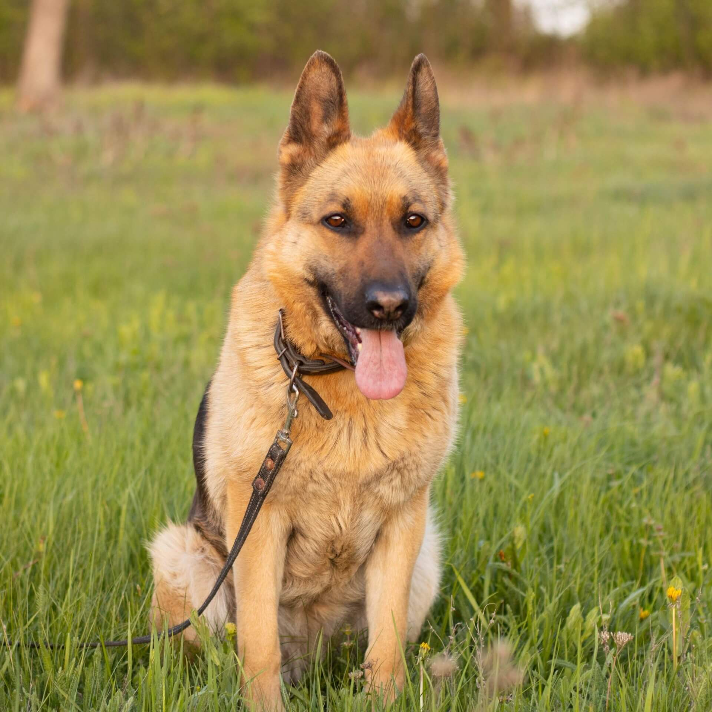
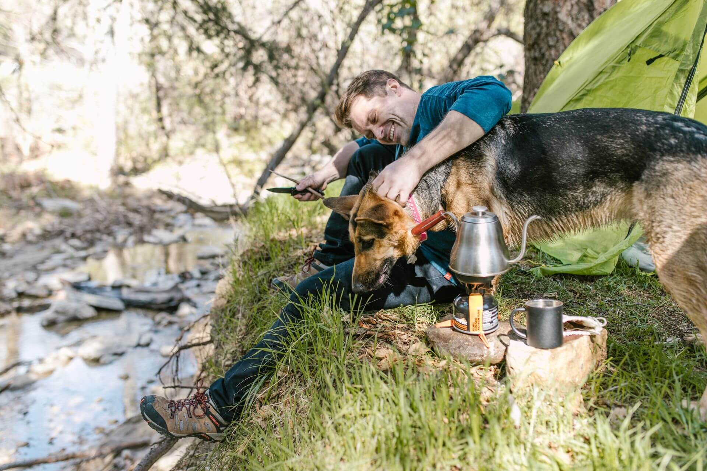
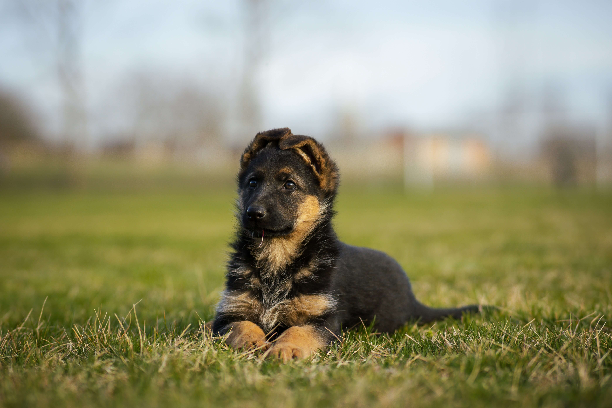
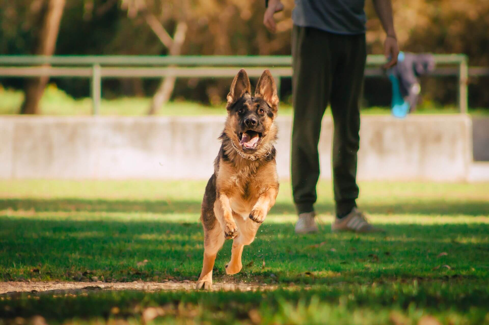

Немецкая овчарка
Умная, преданная и невероятно чуткая собака. Немецкая овчарка выведена как рабочая порода, отсюда её живой ум, выносливость и желание трудиться рядом с человеком.

- Вес
- 22–40 кг
- Рост в холке
- 55–65 см
- Жизнь
- 9–13 лет
- Энергия
- Высокая
- Линька
- Сильная
Характер
Немецкая овчарка появилась в Германии в самом конце XIX века, когда офицер Макс фон Штефаниц задумал создать идеальную рабочую собаку и в 1899 году заложил основу породы. От пастушьих и служебных предков ей достались острый ум, выносливость и желание трудиться рядом с человеком. Овчарка глубоко привязывается к своей семье и хочет быть при деле, поэтому лучше всего раскрывается там, где становится полноправным участником повседневной жизни.
С близкими немецкая овчарка ласкова и предана, а к незнакомым людям относится со сдержанностью, приглядываясь, прежде чем довериться. Эту бдительность не нужно воспитывать особо, она заложена в характере породы и проявляется сама собой. С другими животными овчарка обычно ладит, особенно если растёт вместе с ними с раннего возраста, и ранняя социализация делает её спокойнее и терпимее к соседям по дому.
Ум этой собаки заслуживает отдельного внимания, ведь овчарка не просто послушна, а по-настоящему думает, и ей нужны понятные задачи и ясные правила. Без занятий и нагрузки её живой ум начинает искать выход сам, и тогда появляются излишняя сторожкость или возня от скуки, поэтому ей важны регулярные прогулки, тренировки и общие дела с хозяином. При этом учится она охотно и быстро, схватывая новое с полувзгляда, и дрессировка чаще приносит радость, чем трудности.
Отдельно подкупает то, как чутко немецкая овчарка считывает настроение своего человека и словно настраивается на него, радуясь вместе с ним и улавливая, когда нужно просто молча побыть рядом. Эта способность чувствовать хозяина делает овчарку не только надёжным напарником, но и удивительно близким другом.
Характеристики
Размер
Крупная и крепкая собака. Рост в холке от 55 до 65 сантиметров, вес от 22 до 40 килограммов, кобели заметно массивнее сук.
Шерсть
Густая двойная шерсть с плотным подшёрстком. Линяет сильно, а дважды в год особенно обильно, так что вычёсывать придётся регулярно.
Энергия
Высокая. Овчарке нужны долгие прогулки, нагрузка для тела и задачи для ума, иначе энергия выливается в беспокойство.
Обучаемость
Одна из самых способных пород. Схватывает новое быстро и охотно, особенно когда учёба идёт через игру и понятную цель.
Отношение к детям
С детьми своей семьи овчарка ласкова, терпелива и часто берёт над ними негласное шефство, мягко приглядывая за младшими как за частью своей стаи.
Здоровье
Немецкая овчарка крепка от природы, но как у любой крупной породы у неё есть наследственные слабые места, о которых стоит знать заранее. Ответственные заводчики проверяют здоровье родителей и показывают результаты тестов, поэтому щенка лучше брать именно у них.
Дисплазия суставов
Самая частая особенность породы. Тазобедренные и локтевые суставы развиваются не идеально, что со временем может давать неуверенную походку. Хорошая родословная, разумные нагрузки в щенячестве и контроль веса заметно снижают риск.
Дегенеративная миелопатия
Возрастная особенность нервной системы, которая может проявляться в зрелые годы лёгкой неловкостью задних лап. Есть генетический тест на предрасположенность, а поддерживающий уход и крепкая мышечная форма помогают собаке дольше оставаться активной.
Пищеварение
Крупная и глубокая грудь делает овчарку чувствительной к проблемам с пищеварением. Спокойный режим кормления небольшими порциями, качественный рацион и отдых после еды берегут её самочувствие.
Окрасы
Немецкая овчарка бывает нескольких узнаваемых окрасов. Самый известный — чепрачный, но встречаются и сплошной чёрный, и серо-палевый соболиный.

Чепрачный окрас с тёмным «седлом» на спине — самый узнаваемый облик породы. Соболиный, где каждый волос прокрашен от светлого к тёмному, считается самым древним.
Кому подходит
Немецкая овчарка станет прекрасным спутником активному и вовлечённому человеку, который готов вкладывать время не только в прогулки, но и в обучение, игры и общие занятия. Эта порода создана, чтобы трудиться рядом с хозяином, и расцветает там, где её ум находит применение, будь то спорт, дрессировка или просто насыщенная событиями жизнь семьи.
Лучше всего овчарке живётся с людьми, которые ценят постоянство и готовы стать для неё спокойным и уверенным лидером. Она охотно слушается того, кому доверяет, и отвечает на заботу глубокой преданностью. Семьям с детьми такая собака подходит хорошо, ведь она терпелива и привязчива, а врождённая бдительность делает её надёжным другом для всего дома.
А вот тем, кто подолгу отсутствует или ищет спокойную собаку для размеренной жизни без особых хлопот, стоит присмотреться к другим породам. Немецкая овчарка тяжело переносит безделье и одиночество, и без нагрузки для тела и ума её энергия находит не самый удачный выход. Но рядом с человеком, готовым разделить с ней активную жизнь, она раскрывается как умный, чуткий и бесконечно преданный друг.
Немецкая овчарка в жизни


